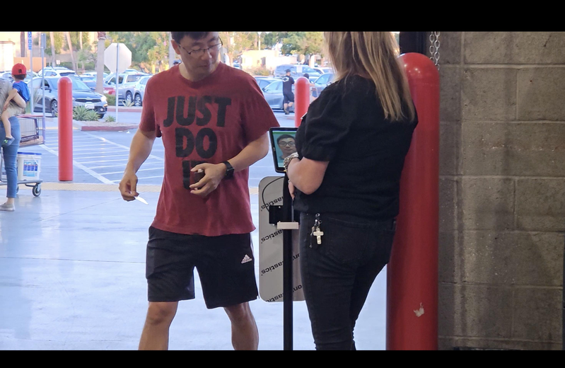
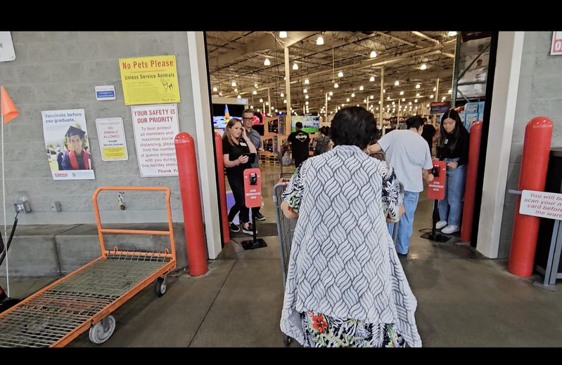

近日，Costco wholesale公司在部分门店悄然推出了新的入场政策，引发了会员间的广泛讨论。这项新措施要求顾客在踏入店内之前，必须先在入口处扫描其会员卡。尽管有少数顾客表示不解，但大多数会员仍然选择遵守。这项新规定不仅标志着Costco会员购物体验的重大转变，也可能预示着零售业为防堵会员制度被滥用的新趋势。
Costco发言人也证实这一测试计划，他解释道，目前部分门店正在入口处进行会员卡扫描，目的是确保会员与其卡片匹配后才能进入店内。目前，该政策已在洛杉矶县工业市（City of Industry）、亨廷顿海滩（Huntington Beach）和英格伍（Inglewood）等Costco门店实施。记者实地走访发现，这些门店的入口处均设有扫描设备，并有工作人员验证，确保顾客遵守新规。每个扫描站还配备显示顾客面部的屏幕，以防止会员卡被他人共用。
这项潜在政策出现在Costco严堵会员卡共享数月之后。当时，该零售商要求顾客在自助结帐时出示会员卡。Costco表示，能够保持尽可能低的价格，是因为会员费有助于抵消运营成本，这使得会员费非常重要。Costco认为非会员享受与会员相同的优惠和价格是不公平的。
华人顾客陈小姐表示，虽然新政策增加了麻烦，但她能理解这一措施。她指出，之前曾看到许多滥用会员卡的相关新闻，店家维护自身权益无可厚非。
然而，也有顾客担心新流程可能会增加等候时间。目前，Costco尚未公布该测试计划的具体实施范围，以及是否会在全国推广。关于Costco会员卡扫描测试的更多信息仍有待公布。

好奇的民众驻足观察显示屏中的画面，试图了解系统如何确保会员卡与用户本人匹配。（记者张庭瑜/摄影） 近日，Costco wholesale公司在部分门店悄然推出了新的入场政策，引发了会员间的广泛讨论。这项新措施要求顾客在踏入店内之前，必须先在入口处扫描其会员卡。尽管有少数顾客表示不解，但大多数会员仍然选择遵守。这项新规定不仅标志着Costco会员购物体验的重大转变，也可能预示着零售业为防堵会员制度被滥用的新趋势。
Costco发言人也证实这一测试计划，他解释道，目前部分门店正在入口处进行会员卡扫描，目的是确保会员与其卡片匹配后才能进入店内。目前，该政策已在洛杉矶 县工业市（City of Industry）、亨廷顿海滩（Huntington Beach）和英格伍（Inglewood）等Costco门店实施。记者实地走访发现，这些门店的入口处均设有扫描设备，并有工作人员验证，确保顾客遵守新规。每个扫描站还配备显示顾客面部的屏幕，以防止会员卡被他人共用。
这项潜在政策出现在Costco严堵会员卡共享数月之后。当时，该零售商要求顾客在自助结帐时出示会员卡。Costco表示，能够保持尽可能低的价格，是因为会员费有助于抵消运营成本，这使得会员费非常重要。Costco认为非会员享受与会员相同的优惠和价格是不公平的。
华人 顾客陈小姐表示，虽然新政策增加了麻烦，但她能理解这一措施。她指出，之前曾看到许多滥用会员卡的相关新闻，店家维护自身权益无可厚非。
然而，也有顾客担心新流程可能会增加等候时间。目前，Costco尚未公布该测试计划的具体实施范围，以及是否会在全国推广。关于Costco会员卡扫描测试的更多信息仍有待公布。

入口处摆放了两台扫描仪，供顾客在进入店内前使用。（记者张庭瑜/摄影） 顾客主动询问店员，了解具体操作流程和相关规定。（记者张庭瑜/摄影）